In this homework, I used various methods to implement rasterization and sampling, including performing the point-in-triangle tests using the three line tests, performing antialiasing by supersampling, implementing three transforms -- translate, rotate, and scaling, drawing a triangle with colors defined at the vertices and interpolated across the triangle area using barycentric interpolation, implementing nearest and bilineal texture mapping, and using mipmaps for texture mapping. I've build many interesting images using these methods and was able to improve the qualities of the images. Some interesting things I've learned are how supersampling can make the images much smoother and nearest sampling and bilinear sampling can have large difference in certain circumstances.
1. How I rasterize triangles.
I used the point-in-triangle test: three line tests described in lecture. Specifically, given three vertices of a triangle p1, p2, and p3, I find the three edges l1, l2, and l3 and their corresponding normal lines. By checking if the dot product is greater than, less than, or equal to 0, I can tell if the given point is above, below, or on the edge of the triangle. The equation would be: Li(x, y) = -(x - Xi)dYi + (y - Yi)dXi given point (x, y) and dXi = Xi+1 - Xi, dYi = Yi+1 - Yi. Depend on the the winding order of the vertices (i.e. clockwise or counter-clockwise), we can check if the point is in the same or opposite side of all three normal lines to determine whether the given pixel is inside triangle or not.
2. Explain how your algorithm is no worse than one that checks each sample within the bounding box of the triangle.
My algorithm only checks pixels that are within the bounding box of the triangle because instead of going from 0 to width and height, which checks every single pixel within the frame, I use min and max function to find the x and y value of the bounding box of the triangle and only loop through pixels within that box.
3. Extra credit: Explain any special optimizations you did.
I factored redundant arithmetic operations out of loops by computing dx01, dy01, dx12, dy12, dx20, and dy20 before the loops.
|
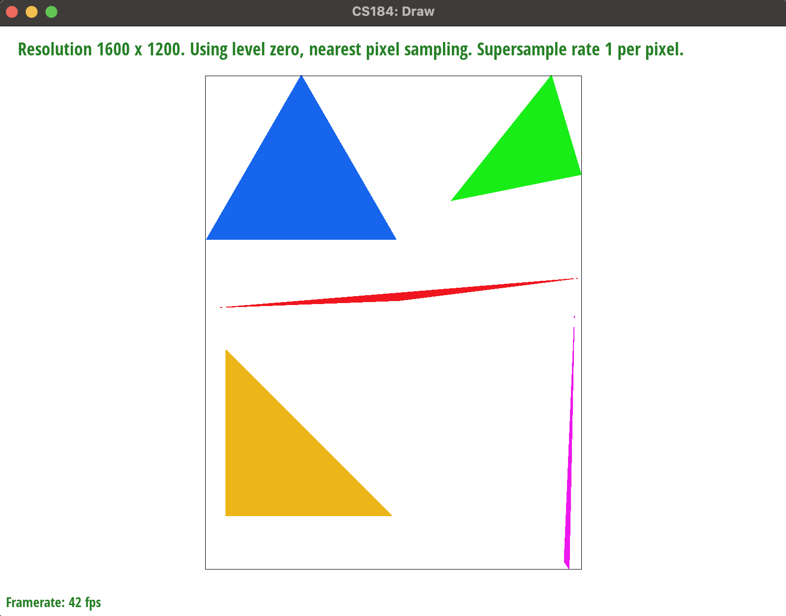
|
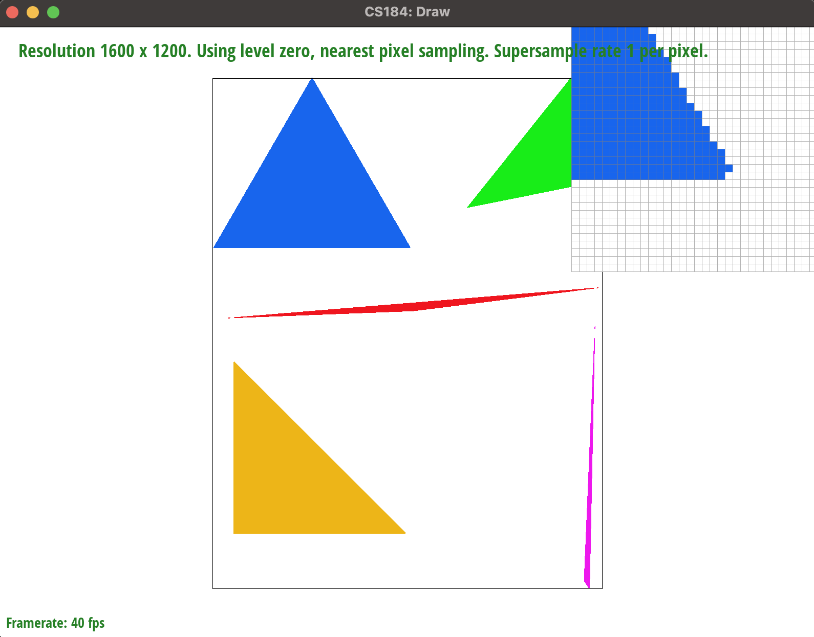
|
1. Walk through your supersampling algorithm and data structures.
In function void RasterizerImp::rasterize_triangle, for each pixel in the bounding box of the triangle, I divide it into numbers of small boxes depend on the sample_rate. I check if the small boxes are inside triangle using the same method as task 1. I draw these small boxes into a bigger sample_buffer that contains more grid locations (the original size is width * hight, the sample_buffer has size width * height * sample_rate). In function void RasterizerImp::resolve_to_framebuffer(), I used indexing method that matches the onc I used in void RasterizerImp::rasterize_triangle to downsample the data in sample_buffer back to the final frame buffer called rgb_framebuffer_target, which has size width * height again. To do this, I loop through data in sample_buffer and group up the small boxes and average down the color by dividing the added up color by the sample_rate. I also modified the functions void RasterizerImp::fill_pixel(size_t x, size_t y, Color c), void RasterizerImp::set_sample_rate(unsigned int rate), and void RasterizerImp::set_framebuffer_target(unsigned char* rgb_framebuffer, size_t width, size_t height) to restore functionality of rasterizing point and line and facilitate sample_buffer resize.
2. Why is supersampling useful?
Supersampling is useful to antialiasing because it improves the quality of the image by making the edge of the image smoother.
3. What modifications did you make to the rasterization pipeline in the process?
Instead of mapping one to one from sample_buffer to frame buffer, I increase the size of sample_buffer by super sampling and use the resolve_to_framebuffer function to decrease the size of the final frame back down using down sampling. Before my modifications, the rasterized triangle function just takes each grid and maps its color to sample_buffer and that would be the final displayed result.
4. Explain how you used supersampling to antialias your triangles.
I renders an image at a higher resolution by taking multiple color samples for each pixel and store the data in sample_buffer. Then I takes the average of those samples to determine the color of each pixel at the lower resolution and applies it before shrinking the image back to the size of the display in frame buffer.
|
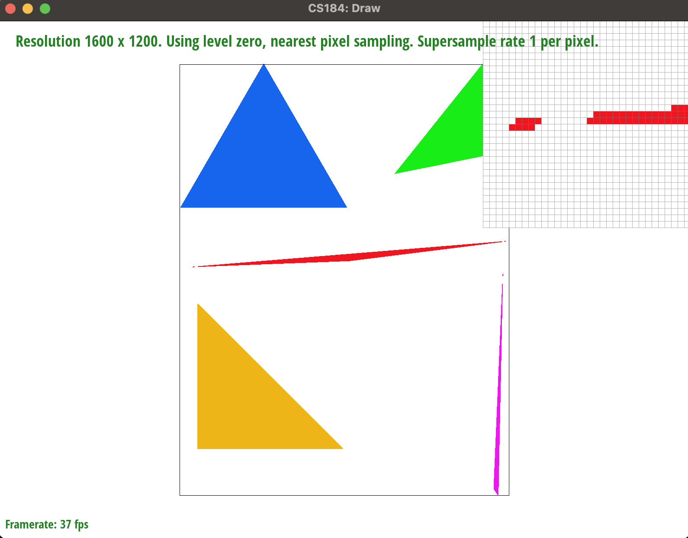
|
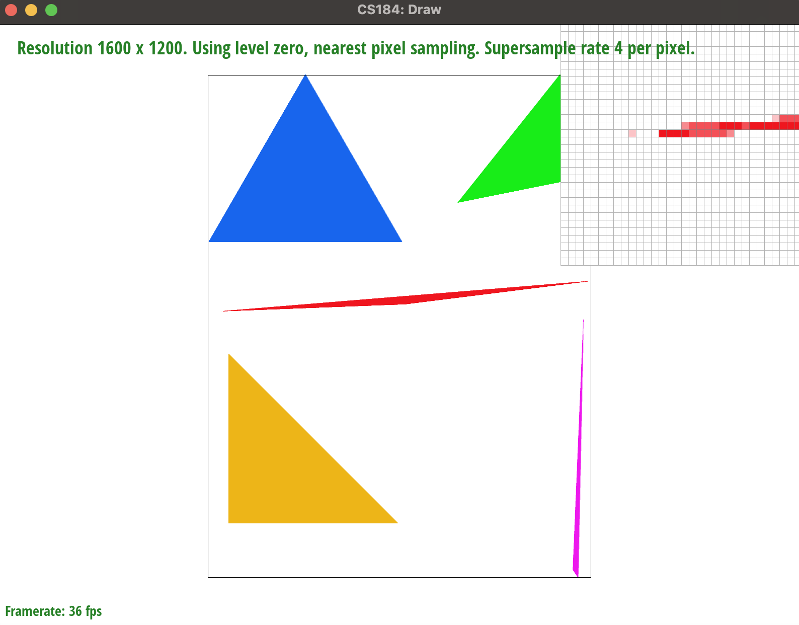
|
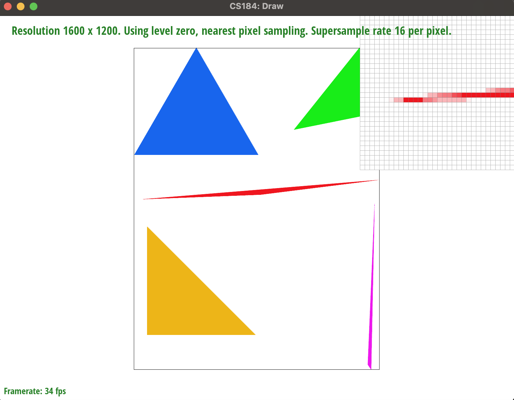
|
Below showing the cubeman can't find his head and is thus confused.
|
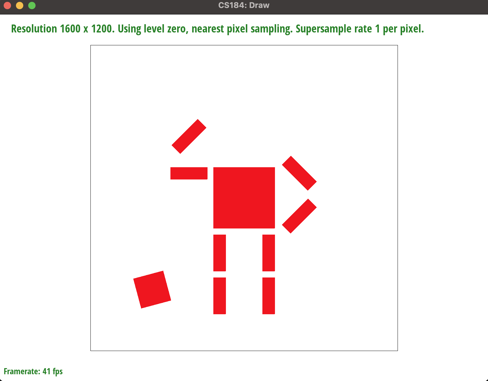
|
Explain barycentric coordinates in your own words and use an image to aid you in your explanation.
Barycentric coordinates represent points within a triangle using a weighted average of the vertices of the triangle. Specifically, the barycentric coordinates of a point are three numbers -- alpha, beta, and gamma that represent the relative weights of the vertices needed to express the point as a linear combination of the vertices. Using the triangle below as an example, the point V inside the trangle with vertices Va, Vb, and Vc can be represented as: V = alpha * Va + beta * Vb + gamma * Vc where alpha + beta + gamma = 1. The alpha, beta and gamma can represent the distance from the point to the triangle's vertices. The closer the distance between the point and the vertex, the bigger the influence on the point the vertex has. For example, the triangle below has red color in Va, green in Vb, and blue in Vc, the pixels closer to vertex Va have color more like red and their alpha value would be much bigger than beta and gamma. When alpha equal to 1, the pixel is right at Va. The point that has same distance to Va, Vb, and Vc combines the color red, green, and blue equally.
|
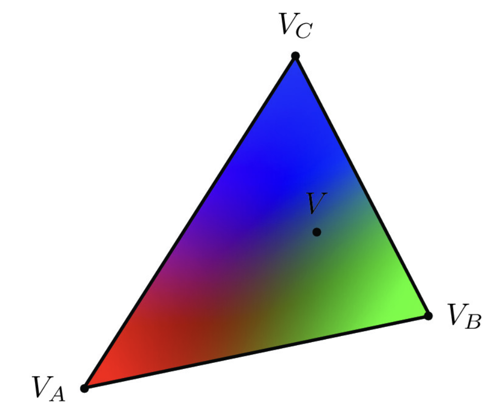
|
|
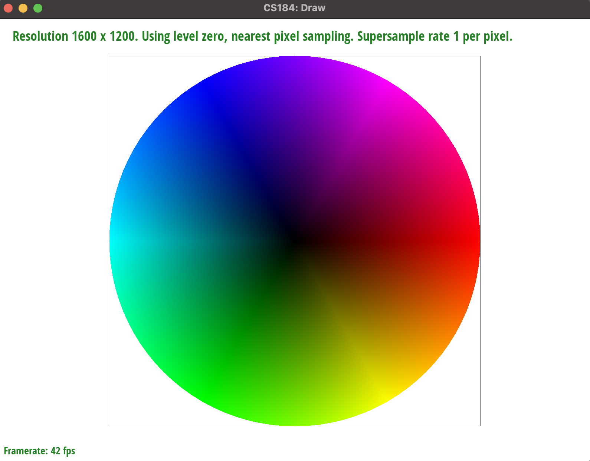
|
Explain pixel sampling in your own words and describe how you implemented it to perform texture mapping. Briefly discuss the two di fferent pixel sampling methods, nearest and bilinear.
In pixel sampling, we want to map our coordinates in framespace into coordinates in texture space. Since we are given two triangles, we would use barycentric coordinates to convert from one space to another space. That is calculate alpha, beta, and gamma of triangle point in sample space (x, y) first, then we can transform to our texture space (u,v) via our alpha, beta, and gamma. After we have our (u,v) coordinates, we can do nearest point sample for this (u,v), which is simply getting the rounded (u,v) coordinates, or using bilinear sample, which require getting four nearest point of this (u,v) and calculate a color with these four point based on their distance and contributes fractions to the color value.
|
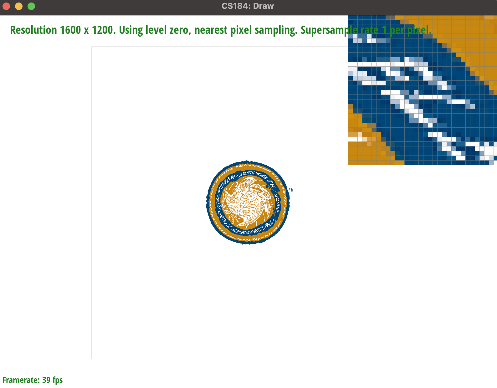
|
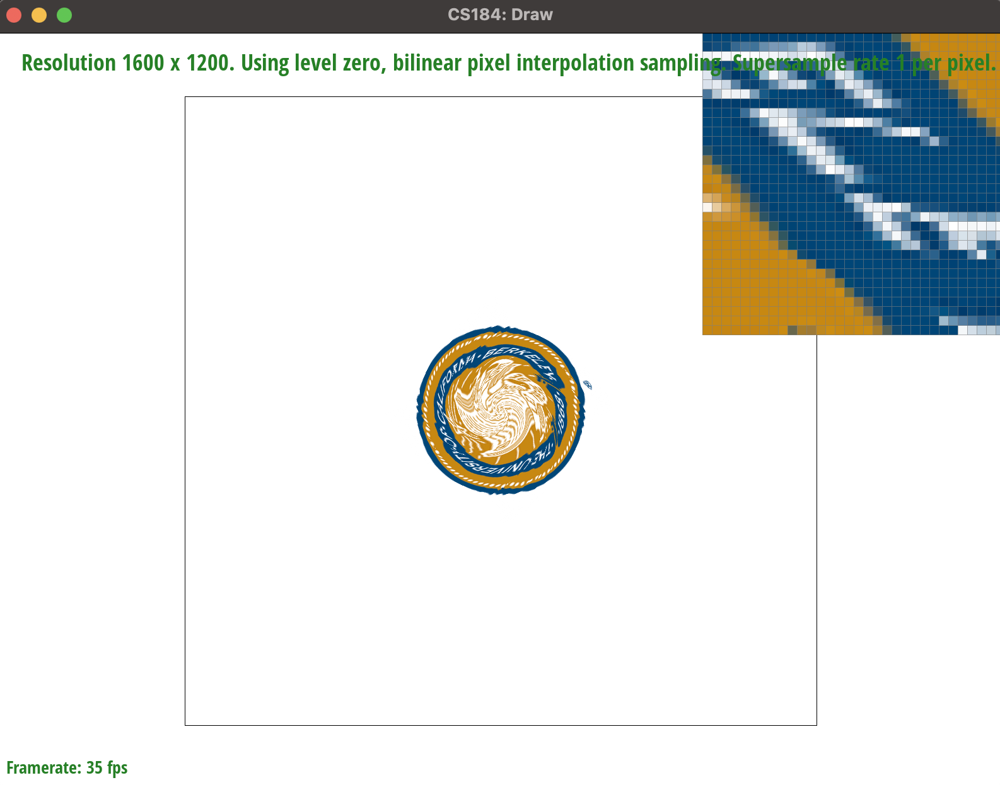
|
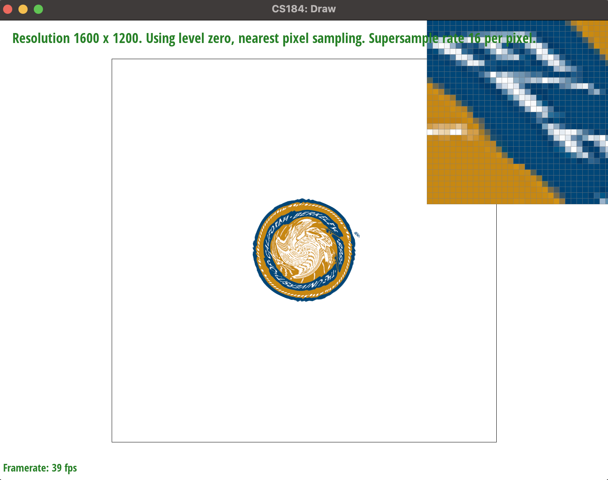
|
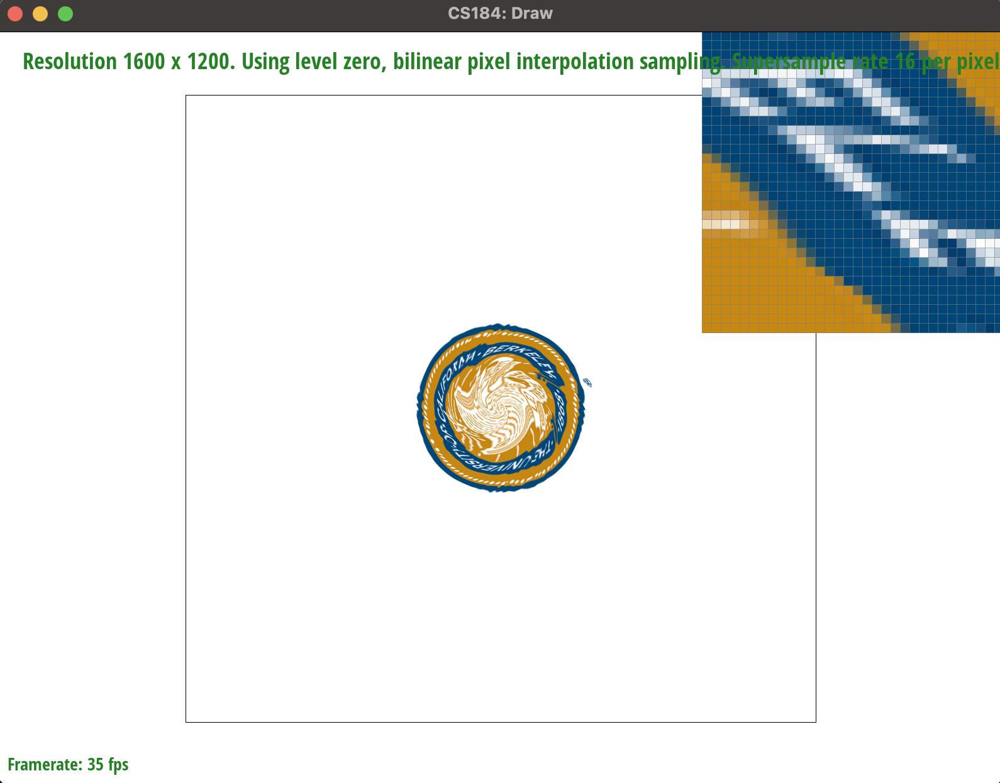
|
Where we can clearly see that bilinear gives better antialias to the image as a whole, less jaggies. While nearest point sample only gives antialias along a specifical axis depends on the location of the point, which it has more jaggies.
Explain level sampling in your own words and describe how you implemented it for texture mapping.
For each point we have in x, y, we want to explore further more on textures's details. We want to filter out high frequency if our pixel's area 1*1 is not enought to fit in more texture color, that is more than 1*1 of texture space, hence we need to down sample the texture space accordingly. And based on du/dx, dv/dx, and du/dy, we get to find out the dimension of texture that we want to downsample. And choosing which mipmaps level to sample from. Letting L = Max (diagonal of dx, diagonal of dy), D = log_2(L), where D is our ideal level for sampling at this point. For L_NEAREST, we use the nearest level of D, that is round(D), as our mipmaps level. For L_LINEAR, we would sample twice, once on level D, another time on level D+1, we then do another linear interpolation on these two level's point, about value D.You can now adjust your sampling technique by selecting pixel sampling, level sampling, or the number of samples per pixel. Describe the tradeoffs between speed, memory usage, and antialiasing power between the three various techniques.
Among all combinations of pixel sampling and level sampling, while P_LINEAR has a better antialiasing power but it has a slow runtime speed and using more memory space. Same things goes for L_LINEAR, uses twice amount of memory as of it fetching two levels of sampling, twice slow as P_LINEAR. On the other size, P_NEAR and L_Near will be much more faster. In General, if the image that we try to draw is flat, using P_NEAR L_ZERO will provide a good result since we don't need to filter out high frequency. If the image that we try to draw have some depths, using some combination of P_NEAR and L_NEAR will provide a good picture. However, if we uses Trilinear on a shrinked detailed image, the result picture will be rather over blurred.

|

|

|

|
If you are not participating in the optional art competition, don't worry about this section!